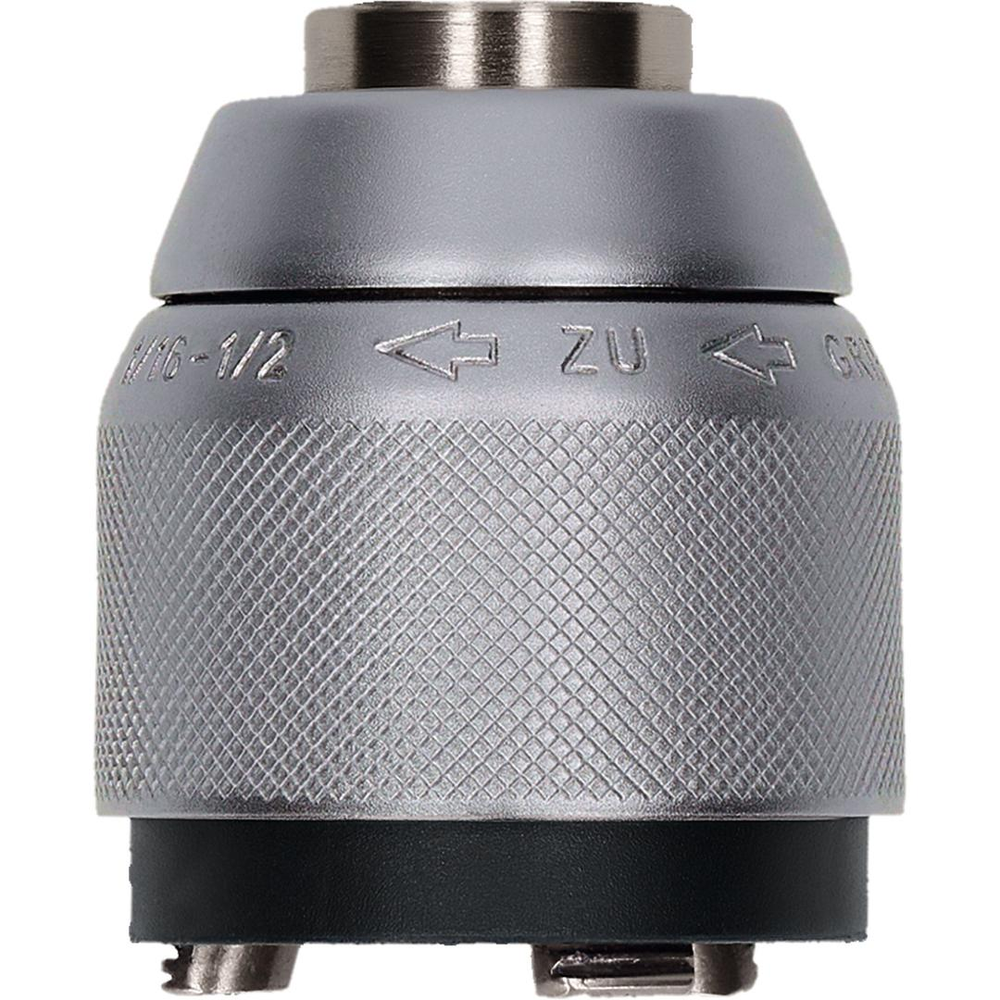

2608572149

| Specification |
PRO Chuck Keyless with adapter, 1.5 - 13 mm |
| Suitable for |
GSB 13 RE; GSB 16; GSB 16 RE; GSB 18-2 RE; GSB 19-2 RE; GSB 20-2; GSB 650 RE; GSB 1600 RE Professional; PSB 450; PSB 550 RE |
| Packaging type |
Plastic packaging, tube, with Euro hole |
| Pack quantity |
1 Pcs |
| Minimum order quantity |
1 Pcs |